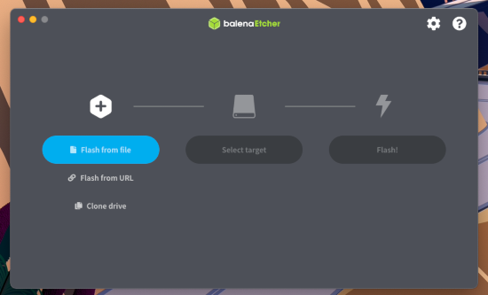
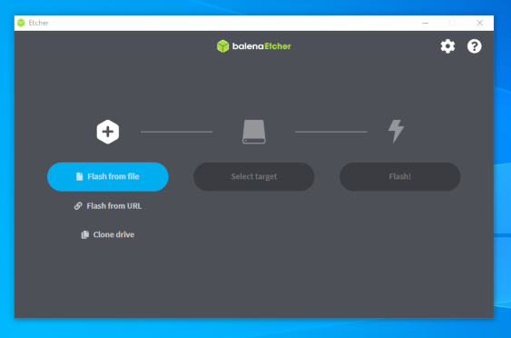

Plug in the USB stick on which you want to install Tails. the intermediary Tails.
All the data on this USB stick will be lost.
The Persistent Storage of your Tails USB stick will not be copied to the temporary Tails.
Open Finder and choose Etcher in Applications.
Open the Etcher download.
At the security warning, confirm that you want to open Etcher.
Etcher starts.
 
Click the Flash from file button.
Choose the USB image that you downloaded earlier.
Make sure that the USB image has an .img file extension.
If the image has an .iso file extension, it is not the correct image. Please go back to the download step for installing from Windows. download step for installing from macOS. download step for upgrading from Windows. download step for upgrading from macOS.
Click the Select target button to select your USB stick.


Click Flash.
Enter your password if you are asked for it.
The installation takes a few minutes.
After installing Tails, Etcher verifies the installation.
If the verification of Etcher fails, try to install again or try using a different USB stick.
Close Etcher.
If a notification about the USB stick not being readable appears, click Eject to eject the USB stick.